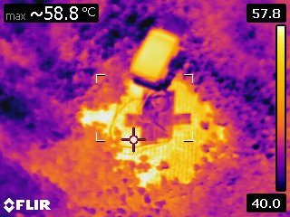
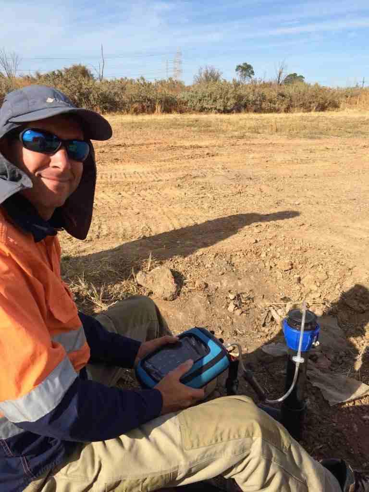

Landfill Gas Risk Assessment
Site-wide landfill gas and migration risk assessment for active and closed landfill sites.
- Regulator-aligned recommendations
- Clear programs for mitigation
Independent LFG Specialists
Advice and deliverables founded on operational experience that AI can't replicate.
Nexus Landfill Gas provides specialist landfill gas and hazardous ground gas advice to support councils, consulting projects, and property developments near and on landfills and sites impacted by hazardous ground gas. We focus on practical, defensible solutions that keep projects compliant and on-program, avoid late surprises, and protect future asset value.

Currently Taking Projects
QLD · NSW · VIC · WA · SA
Core Service Areas
For consulting and development businesses, this means earlier clarity on gas risk, fewer planning surprises, and more predictable development and remediation costs.
Site-wide landfill gas and migration risk assessment for active and closed landfill sites.
Monitoring plans and reporting that turn data into decisions and compliance confidence.
Independent review and optimisation of gas collection and control systems to improve capture efficiency and ACCUs.
Early screening, risk assessment, and pragmatic mitigation concepts to secure approvals.
Capabilities
Practical, defensible deliverables designed to reduce uncertainty and keep projects moving.

Meet Aidan
30+
years of experience

Aidan has over 30 years of experience in analytics, environmental assessment and remediation, with a focus on landfill and land development projects.
He has worked on landfill projects across Australia, Asia, USA and Europe, covering all aspects of landfill gas investigation, risk management, design, installation, operation, and aftercare.
Detailed Capabilities
Each area below is organised for easy updates and growth. Expand the sections you need and keep the rest out of the way.
Direct access to principal-level expertise for risk assessment, monitoring, mitigation design input, and troubleshooting. We focus on pragmatic, buildable solutions that support approvals and protect long-term asset value.
Whether you are a developer needing a ground gas risk assessment, a council managing a legacy landfill, or a waste operator exploring ways to increase yield for ACCUs, let’s talk.
Start a ConversationWhy Nexus
Practical, defensible outcomes for developers, landfill operators, and regulators, with direct specialist support from scoping through delivery.
Your work is delivered by an experienced landfill gas specialist, not delegated.
Early, realistic view of risk and mitigation cost so development stacks up before commitment.
Solutions that satisfy regulators without unnecessary cost or program impact.
On-call support during peak periods, projects, or regulator pressure without recruiting.
A fresh set of eyes on monitoring, reporting, and gas systems to reduce blind spots.
Send a message and we will respond within one business day. For urgent requests, email us directly.